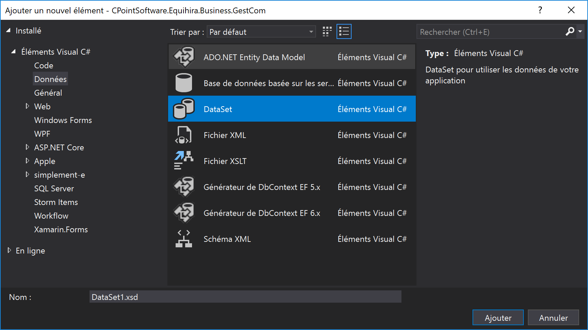
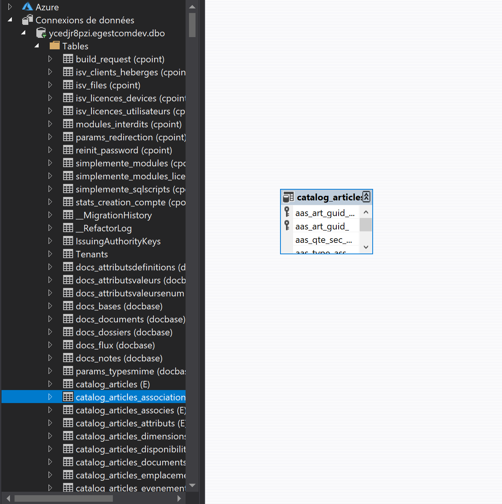
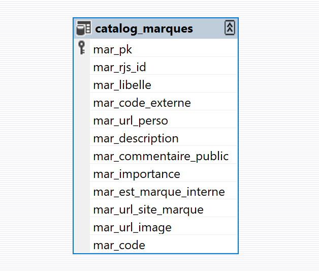
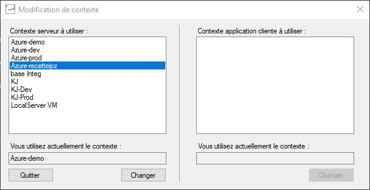

Framework d'accés aux données
Pour accéder aux données, vous devez utiliser, autant que possible, le framework 'DataManager'. Celui-ci vous permet de réaliser des opérations de select, d'update, etc.
Principes d'accès
Le framework d'accès aux données met à disposition plusieurs classes, dont la principale, DataManager, permet d'exécuter des requêtes et autres opérations sur la base. Ce framework étant assez ancien, il utilise des objets de type DataSet (voir ci-dessous) pour stocker les données en mémoire.
Pour utiliser le framework afin d'accéder au données, vous devez commencer par obtenir un objet de type DataManager en appelant la méthode static GetDataManager() (vous pouvez, éventuellement, lui passer un nom de connexion). Il s'agit d'un Design pattern de type Factory classique qui utilise un système de configuration décrit ci-dessous.
using CPointSoftware.Framework.DataLayer;
...
var dm = DataManager.GetDataManager();
dm.Execute("...");
Important
Dans le cadre de son utilisation dans les solutions dérivées de Equihira (Phygital, e-commerce, StoreServer, etc.), la majorité des accès à la base de données sera réalisée au sein d'objets contenant toute la logique métier, dont la classe de base propose une propriété MyDataManager permettant d'accèder à un objet DataManager connecté sur la bonne base de données.
La classe retournée par la méthode GetDataManager() sera spécifique au serveur de base de données et à la technologie d'accès utilisé. Le module de base du framework permet de se connecter à des bases :
- SQL Server, via un accès client natif
- SQL Server Compact Edition
- Toute base gérée par OleDb
Il existe aussi des extensions pour Oracle et PostgreSql.
Récupération de données
La récupération de données peut se faire via deux méthodes :
- pour charger des données de taille réduite en mémoire, vous pouvez utiliser directement l'une des surcharge de la méthode
Loadqui permet de remplir un objet de typeDataSet - si vous avez un flux de données plus conséquent et souhaitez utiliser une notion de curseur, vous pouvez utiliser l'une des méthodes
Openpour charger des données par "paquet".
Pour l'une et l'autre des méthodes, il existe deux grandes catégories de surcharges :
- Les méthodes acceptant en paramètres une
DataTableet un ensemble deQueryClausegénère une requête Sql dynamique et sont utilisés lorsque les données à récupérer sont d'une nature assez simple - celles acceptant en premier paramètre une requête SQL sous forme d'une
string.
Le code suivant :
var dm = DataManager.GetDataManager();
var ds = new MonDataSet();
dm.Load(ds.MaTable,
new WhereClause("colonne1","=","valeur1"))
charge dans la table MaTable, toutes les lignes de la base de données ayant valeur1 dans la colonne1.
Note
Toutes les limitations ajoutées via l'utilisation de WhereClause sont transformée en clauses avec paramètres. L'exemple ci-dessous se transcrit sous la forme WHERE colonne1 = @where1, limitant ainsi les risques d'injection SQL.
Les différentes utilisations du WhereClause sont :
new WhereClause(colonne, operateur, valeur)ajoute une entrée dans les clausesWHEREde la requête. Si vous ajoutez plusieurs clauses, elle seront associé via desAND.new WhereClause(colonne, valeur)ajoutera une clause colonne=valeurnew WhereClause(WhereClauseOperator.OR, new WhereClause(...), new WhereClause(...))permet de créer une clauseWHERE ( ... OR ....). Vous pouvez aussi expréssement demander unANDen utilisant cette signature et la valeurWhereClauseOperator.AND
Quelques exemples :
dm.Load(....,
new WhereClause("colonne1", "like", "valeur%"));
// La clause générée sera
// WHERE colonne1 like @att1 avec @att1 = 'valeur%'
dm.Load(....,
new WhereClause("colonne1", "valeur"));
// La clause générée sera
// WHERE colonne1 = @att1 avec @att1 = 'valeur'
dm.Load(....,
new WhereClause("colonne1", new string[] { "valeur1", "valeur2"}));
// La clause générée sera
// WHERE colonne1 in (@att1_1, @att1_2) avec @att1_1 = 'valeur1' et @att1_2 = 'valeur2'
dm.Load(....,
new WhereClause("colonne_date", "<=", DateTime.Today));
// La clause générée sera
// WHERE colonne_date <= @att1 avec @att1 = la date du jour
dm.Load(....,
new WhereClause(WhereClauseOperator.OR,
new WhereClause("colonne1", "valeur"),
new WhereClause("colonne2", "deuxieme_valeur")));
// La clause générée sera
// WHERE (colonne1 = @att1 or colonne2=@att2) avec @att1 = 'valeur' et @att2 = 'deuxieme_valeur'
L'utilisation d'un objet de type OrderByClause permet d'ajouter une clause ORDER BY, par exemple :
... new OrderByClause("colonne2", false)...
// La clause générée sera
// ORDER BY colonne2 ASC
L'utilisation des signatures acceptant une requête en premier paramètre vous permet de définir la requête à utiliser, par exemple :
var dm = DataManager.GetDataManager();
var ds = new MonDataSet();
dm.Load("select * from matable where colonne1=@valeur1",
ds.MaTable,
new DataParameter("@valeur1", "valeur"));
Important
Si vous utilisez cette signature, faites attention à ne pas faire de concaténations qui puissent déclencher des possibilités d'injection SQL. Veillez à toujours utiliser des paramètres @xxx (en T-SQL) pour passer les valeurs et ne surtout jamais faire quelque chose comme :
dm.Load("select * from table where colonne1 like '" + maValeur + "'" ...);`
DataSet : kezako ?
La classe DataSet est présente dans .net depuis la version 1.0 est sert à conserver en mémoire des données issues de base de données. Ils implémentent une version assez poussée de change tracking permettant de savoir ce qui a été modifié en mémoire.
Comme la plupart des technologies de représentation des données, les DataSet ont besoin d'être configurés, via Visual Studio pour refleter le schéma de la base de données. Cela se fait en créant une nouvelle classe dérivée de DataSet via l'item correspondant dans Visual Studio :

Une fois la classe créée, vous pouvez utiliser l'explorateur de serveur pour vous connecter à la BDD, et effectuer un Drag'n'Drop des tables/vues sur le concepteur :

Note
La classe xxxAdapter n'est pas utilisée, vous pouvez la supprimer du DataSet
Une fois les données chargées en mémoire via l'une des méthodes Load (ou Open) ci-dessus, vous pouvez y accèder via des propriétés auto-générées correspondant à/aux différente(s) table(s). En utilisant les objets retournés par ces propriétés, vous pourrez accèder aux enregistrements, à leurs valeurs et effectuer des opérations de modification. La structures des données d'un DataSet est le miroir de la structure de bdd :
- il contient une ou plusieurs
DataTablecorrespondants aux vues/tables de la bdd - chaque table est défini par un ensemble de
DataColumn - et contient des enregistrements via des objets
DataRow.
Par exemple :
- Le
DataSetsuivant contient une unique tablecatalog_marques:

- il peut être utilisé pour charger des données depuis la base :
var dm = DataManager.GetDataManager();
var ds = new MarquesDS();
dm.Load("select * from e.catalog_marques where mar_rjs_id=@rjs_id",
ds.catalog_marques,
new DataParameter("@rjs_id", 1));
- une fois les données en mémoire, il est possible d'accèder aux informations :
foreach(var marque in ds.catalog_marques)
{
Console.WriteLine(marque.mar_libelle)
}
Important
Pour toutes les colonnes Nullable, et comme les DataSet ont été créés avant l'apparition des types Nullable (int?, decimal?, etc.), il existe une méthode IsNomDuChampNull() pour vérifier si un champ est null. Vous devez absolument utiliser cette méthode : un appel à un champ/propriété dont la valeur est null résultera en une erreur dans la plupart des cas.
Modifications
Pour envoyer des modifications en base de données, il existe deux solutions :
- l'utilisation de la méthode
Unloadqui prend en paramètre unDataRowque vous aurez créé/modifié/supprimé en mémoire via les méthodes desDataSet - l'utilisation de la méthode
Executequi permet d'éxecuter une requête "arbitraire" et qui est détaillée ci-dessous.
L'utilisation de la méthode Unload implique que vous avez déjà créé un DataSet et que vous l'avez rempli depuis la base (pour un UPDATE ou un DELETE). Vous pouvez, dans ce cas, utiliser l'une des méthodes ou des propriété d'une DataRow afin de réaliser les modification souhaitées en mémoire puis forcer la "sérialisation" de ces modifications en base.
Par exemple :
var dm = DataManager.GetDataManager();
var ds = new MonDataSet();
dm.Load(ds.MaTable,
new WhereClause("colonne1","=","valeur1"));
if(ds.MaTable.Count==1)
{
var r = ds.MaTable[0];
r.colonne2 = "nouvelle_valeur";
dm.Unload(r);
}
correspond aux actions suivantes :
- charger la/les lignes de MaTable avec la clause
WHERE colonne1='valeur1' - Si il n'y a qu'une seule ligne en retour, modifier en mémoire la valeur de la colonne2 de l'enregistrement
- Pousser les modifications en base
La méthode Unload essaiera de générer la requête d'UPDATE la plus simple pour limiter les clauses de concurrence.
Pour créer une nouvelle ligne, vous pouvez utiliser les méthodes AddXXXRow créées automatiquement par les outils de DataSet typés. Une ligne marquées comme "nouvelle" seront sérialisées via un INSERT.
Executer des requêtes arbitraire
La méthode Execute permet d'exécuter une requête passée en paramètre et qui n'attends pas de valeur de retour. Vous pouvez l'utiliser par exemple, pour réaliser des UPDATE, INSERT, DELETE, MERGE, TRUNCATE, etc.
Par exemple :
var dm = DataManager.GetDataManager();
var ds = new MonDataSet();
dm.Execute("delete from MaTable where colonne1=@val1",
new DataParameter("@val1","mavaleur"));
Gestion des transactions
Si vous avez besoin de réaliser plusieurs opérations de façon unitaire, au sein d'une même transaction en base de données, vous devez utiliser la classe TransactionContext. Vous pouvez créer un objet de cette classe en passant au constructeur un DataManager.
var dm = DataManager.GetDataManager();
using(var transaction = new TransactionContext(dm))
{
... les opérations dans la transaction ...
transaction.Commit();
}
La classe TransactionContext implémente le concept IDisposable et peut donc être utilisé dans une clause using (plus d'infos). Le comportement par défaut, lorsque le using se termine est de faire un ROLLBACK sur la transaction, sauf si vous avez déjà appelé la méthode Commit().
Note
Vous trouverez probablement dans le code des références à une classe BusinessTransaction permettant de gérer des transactions implicites entre plusieurs classes. Cette classe ne doit plus être utilisée, elle est basée sur des technologies obsolètes depuis .net 4 et qui ont disparu de .net Core.
Configuration
La configuration de la base de données utilisée par le framework se fait via un fichier de configuration nommé cpointsoftware.config. Utilisé en dehors des solutions, ce fichier doit se trouver dans le dossier exécutable de l'application, mais lorsqu'il est utilisé dans le cadre du e-commerce, de la gestion commerciale ou des composants API, un système de redirection permet de placer ce fichier dans un dossier connu, et configurable via une application ou le web.config.
Emplacement du fichier
Par défaut, le fichier se trouve dans le dossier %PROGRAMDATA%\\CPoint\\[e]\\bin\\config. Il existe deux solutions pour permettre de modifier ce chemin :
- en développement ou en test, vous pouvez utiliser l'application ContextSwitcher pour basculer entre plusieurs environnements.
en production, vous pouvez ajouter le chemin vers le dossier de configuration dans le fichier
web.configou, si il est présent, directement dans le fichiere.config.Vous pouvez définir le dossier racine des données en modifiant l'élément
<e>:<e> <e.env rootFolder="{DossierRacine}" /> </e>Si vous utilisez cette option, le fichier de configuration devra se trouver dans
{DossierRacine}\\bin\\config
Format du fichier
Le fichier de configuration est un fichier XML contenant un noeud pour chaque connexion à la base de données.
<?xml version="1.0" encoding="utf-8" ?>
<Configuration>
<Sections>
<Section name="Framework"
assemblyName="CPointSoftware.Framework"
className="CPointSoftware.Framework.Configuration.ConfigurationHandler"/>
</Sections>
<Settings >
<Framework>
<Connections>
<Connection name="Equihira" default="true"
connectionString="*****" />
</Connections>
</Framework>
</Settings>
</Configuration>
Les différentes propriétés pour chaque connexion sont :
namele nom de la connexion utilisé en tant que paramètre de la méthodeGetDataManager("nomconnexion")default='true'permet de définir la connexion pour la signature par défautGetDataManager()connectionStringcontient la chaine de connexion, spécifique au fournisseur ADO.net
L'application ContextSwitcher
Vous pouvez installer l'application ContextSwitcher pour basculer facilement entre plusieurs environnements de développement.
Une fois installée et lancée, cette application ajoute une icone dans la zone de notification de votre barre de tâche :
En double cliquant sur l'icone dans cette barre, vous pourrez choisir l'un de vos environnements de développement :
